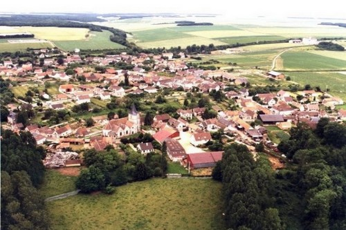

Mairie de Chaudon · Eure-et-Loir 28210
Commune de Chaudon
Bonjour
Il est --:--:--
Commune de la région Centre, au nord du département de l'Eure-et-Loir, Chaudon s'étire le long de la vallée de l'Eure entre Dreux et Nogent-le-Roi.
Aux portes de la Normandie, à 1 heure de Paris par la RN 12, Chaudon est une commune rurale qui a vu sa population doubler en cinquante ans — de 850 habitants à 1 715 habitants.
Chiffres 2022, mis en vigueur au 1er janvier 2025.
Outre le centre-bourg, Chaudon possède trois hameaux :
• Ruffin, partagé avec Bréchamps
• Vaubrun, partagé avec Nogent-le-Roi
• Mormoulins


Depuis le 1er janvier 2023, la taxe d'habitation sur la résidence principale est supprimée pour tous les contribuables. Elle est maintenue sur les résidences secondaires. La part départementale de taxe foncière est basculée vers les communes.
| Taxe | Taux | Détail |
|---|---|---|
| Taxe d'habitation | 10,25 % | Résidences secondaires uniquement |
| Taxe foncière bâtie | 41,97 % | 21,75 % commune (inchangé depuis 2011) + basculement TF départementale 20,22 % |
| Taxe foncière non bâtie | 27,86 % | Inchangé depuis 2011 |
Les taux communaux sont stables depuis 2011.

